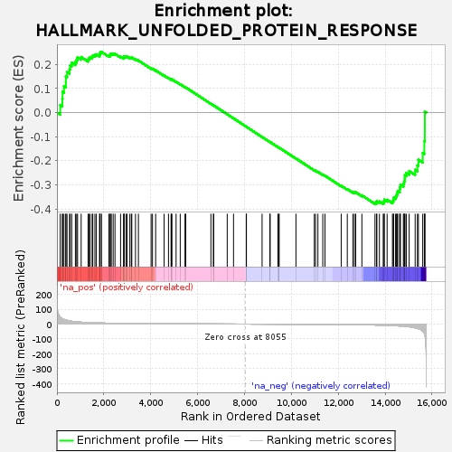

| | | Dataset | DiseaseStatus_ctr_vs_case |
| Phenotype | NoPhenotypeAvailable |
| Upregulated in class | na_neg |
| GeneSet | HALLMARK_UNFOLDED_PROTEIN_RESPONSE |
| Enrichment Score (ES) | -0.37928015 |
| Normalized Enrichment Score (NES) | -1.0093317 |
| Nominal p-value | 0.43537414 |
| FDR q-value | 0.570283 |
| FWER p-Value | 1.0 |
Table: GSEA Results Summary

Fig 1: Enrichment plot: HALLMARK_UNFOLDED_PROTEIN_RESPONSE
Profile of the Running ES Score & Positions of GeneSet Members on the Rank Ordered List
| SYMBOL | RANK IN GENE LIST | RANK METRIC SCORE | RUNNING ES | CORE ENRICHMENT | | 1 | NOLC1 | 139 | 47.428 | 0.0313 | No |
| 2 | NOP56 | 230 | 36.412 | 0.0564 | No |
| 3 | FUS | 239 | 35.813 | 0.0862 | No |
| 4 | NOP14 | 298 | 31.604 | 0.1093 | No |
| 5 | EIF4G1 | 379 | 27.187 | 0.1272 | No |
| 6 | SHC1 | 380 | 27.183 | 0.1502 | No |
| 7 | EIF4A1 | 430 | 25.168 | 0.1684 | No |
| 8 | DKC1 | 537 | 21.395 | 0.1798 | No |
| 9 | IFIT1 | 564 | 20.492 | 0.1955 | No |
| 10 | POP4 | 631 | 18.929 | 0.2073 | No |
| 11 | SKIV2L2 | 787 | 15.623 | 0.2106 | No |
| 12 | EXOSC2 | 841 | 14.862 | 0.2198 | No |
| 13 | EXOSC1 | 880 | 14.307 | 0.2295 | No |
| 14 | EIF2S1 | 1033 | 12.547 | 0.2304 | No |
| 15 | CNOT4 | 1328 | 9.780 | 0.2199 | No |
| 16 | EIF4A3 | 1361 | 9.551 | 0.2260 | No |
| 17 | SDAD1 | 1414 | 9.159 | 0.2304 | No |
| 18 | KHSRP | 1501 | 8.681 | 0.2322 | No |
| 19 | CNOT6 | 1529 | 8.530 | 0.2377 | No |
| 20 | ALDH18A1 | 1619 | 8.115 | 0.2389 | No |
| 21 | DCP2 | 1681 | 7.831 | 0.2417 | No |
| 22 | BANF1 | 1816 | 7.223 | 0.2392 | No |
| 23 | TUBB2A | 1834 | 7.153 | 0.2442 | No |
| 24 | BAG3 | 1842 | 7.120 | 0.2498 | No |
| 25 | GEMIN4 | 1902 | 6.885 | 0.2518 | No |
| 26 | WFS1 | 2213 | 5.787 | 0.2369 | No |
| 27 | EXOSC10 | 2272 | 5.629 | 0.2380 | No |
| 28 | NPM1 | 2276 | 5.620 | 0.2426 | No |
| 29 | EDC4 | 2319 | 5.486 | 0.2445 | No |
| 30 | HSP90B1 | 2397 | 5.293 | 0.2441 | No |
| 31 | EXOC2 | 2475 | 5.120 | 0.2435 | No |
| 32 | ZBTB17 | 2714 | 4.553 | 0.2321 | No |
| 33 | SRPRB | 2849 | 4.217 | 0.2272 | No |
| 34 | ARFGAP1 | 2850 | 4.215 | 0.2307 | No |
| 35 | CCL2 | 2862 | 4.190 | 0.2336 | No |
| 36 | CNOT2 | 2945 | 4.043 | 0.2318 | No |
| 37 | EIF4E | 2994 | 3.928 | 0.2320 | No |
| 38 | NHP2 | 3110 | 3.695 | 0.2278 | No |
| 39 | RRP9 | 3174 | 3.563 | 0.2268 | No |
| 40 | CALR | 3193 | 3.534 | 0.2286 | No |
| 41 | TATDN2 | 3350 | 3.285 | 0.2214 | No |
| 42 | EXOSC5 | 3475 | 3.102 | 0.2161 | No |
| 43 | YWHAZ | 4016 | 2.362 | 0.1836 | No |
| 44 | SLC7A5 | 4075 | 2.290 | 0.1819 | No |
| 45 | ATP6V0D1 | 4211 | 2.150 | 0.1751 | No |
| 46 | LSM4 | 4572 | 1.781 | 0.1536 | No |
| 47 | ATF6 | 4758 | 1.621 | 0.1431 | No |
| 48 | IMP3 | 4868 | 1.541 | 0.1375 | No |
| 49 | NFYA | 4879 | 1.533 | 0.1381 | No |
| 50 | H2AFX | 4906 | 1.511 | 0.1377 | No |
| 51 | PARN | 5082 | 1.361 | 0.1277 | No |
| 52 | DDX10 | 5259 | 1.243 | 0.1175 | No |
| 53 | DCTN1 | 5461 | 1.095 | 0.1056 | No |
| 54 | EXOSC4 | 5495 | 1.066 | 0.1044 | No |
| 55 | HSPA9 | 6567 | 0.495 | 0.0364 | No |
| 56 | GOSR2 | 6673 | 0.455 | 0.0300 | No |
| 57 | EXOSC9 | 6686 | 0.450 | 0.0296 | No |
| 58 | CXXC1 | 7264 | 0.243 | -0.0070 | No |
| 59 | SEC31A | 7532 | 0.156 | -0.0240 | No |
| 60 | TTC37 | 8074 | -0.007 | -0.0585 | No |
| 61 | HSPA5 | 8083 | -0.009 | -0.0590 | No |
| 62 | LSM1 | 8751 | -0.248 | -0.1015 | No |
| 63 | EEF2 | 9087 | -0.386 | -0.1225 | No |
| 64 | DCP1A | 9093 | -0.389 | -0.1225 | No |
| 65 | VEGFA | 9425 | -0.537 | -0.1432 | No |
| 66 | PREB | 9454 | -0.548 | -0.1446 | No |
| 67 | DDIT4 | 9481 | -0.555 | -0.1457 | No |
| 68 | YIF1A | 10195 | -0.946 | -0.1905 | No |
| 69 | SLC30A5 | 10978 | -1.516 | -0.2392 | No |
| 70 | IARS | 11032 | -1.570 | -0.2413 | No |
| 71 | HYOU1 | 11132 | -1.660 | -0.2462 | No |
| 72 | XBP1 | 11340 | -1.864 | -0.2578 | No |
| 73 | SLC1A4 | 11433 | -1.936 | -0.2621 | No |
| 74 | NFYB | 12126 | -2.790 | -0.3039 | No |
| 75 | DNAJA4 | 12386 | -3.224 | -0.3178 | No |
| 76 | DNAJC3 | 12623 | -3.717 | -0.3297 | No |
| 77 | KIF5B | 12687 | -3.844 | -0.3305 | No |
| 78 | CKS1B | 12745 | -3.949 | -0.3308 | No |
| 79 | KDELR3 | 13008 | -4.582 | -0.3436 | No |
| 80 | EIF2AK3 | 13567 | -6.208 | -0.3740 | Yes |
| 81 | ERN1 | 13637 | -6.491 | -0.3729 | Yes |
| 82 | EIF4A2 | 13645 | -6.532 | -0.3678 | Yes |
| 83 | EDEM1 | 13756 | -6.984 | -0.3690 | Yes |
| 84 | XPOT | 13918 | -7.815 | -0.3726 | Yes |
| 85 | PDIA6 | 13958 | -7.994 | -0.3684 | Yes |
| 86 | CEBPG | 13960 | -8.001 | -0.3616 | Yes |
| 87 | SRPR | 14085 | -8.649 | -0.3622 | Yes |
| 88 | SPCS1 | 14312 | -10.173 | -0.3681 | Yes |
| 89 | CEBPB | 14351 | -10.467 | -0.3616 | Yes |
| 90 | DNAJB9 | 14361 | -10.513 | -0.3533 | Yes |
| 91 | TSPYL2 | 14445 | -11.152 | -0.3492 | Yes |
| 92 | RPS14 | 14486 | -11.486 | -0.3420 | Yes |
| 93 | SSR1 | 14513 | -11.734 | -0.3337 | Yes |
| 94 | ATF3 | 14537 | -11.967 | -0.3250 | Yes |
| 95 | PDIA5 | 14624 | -12.705 | -0.3198 | Yes |
| 96 | TARS | 14629 | -12.758 | -0.3092 | Yes |
| 97 | SERP1 | 14652 | -13.030 | -0.2996 | Yes |
| 98 | CHAC1 | 14778 | -14.628 | -0.2952 | Yes |
| 99 | PAIP1 | 14809 | -15.002 | -0.2844 | Yes |
| 100 | MTHFD2 | 14837 | -15.368 | -0.2731 | Yes |
| 101 | SEC11A | 14841 | -15.399 | -0.2602 | Yes |
| 102 | EIF4EBP1 | 14902 | -16.316 | -0.2503 | Yes |
| 103 | FKBP14 | 15026 | -18.144 | -0.2427 | Yes |
| 104 | ERO1L | 15280 | -24.988 | -0.2377 | Yes |
| 105 | SPCS3 | 15377 | -28.886 | -0.2194 | Yes |
| 106 | ATF4 | 15419 | -30.976 | -0.1958 | Yes |
| 107 | ASNS | 15604 | -47.277 | -0.1675 | Yes |
| 108 | PSAT1 | 15673 | -63.008 | -0.1185 | Yes |
| 109 | HERPUD1 | 15693 | -72.785 | -0.0580 | Yes |
| 110 | WIPI1 | 15694 | -73.187 | 0.0040 | Yes |
Table: GSEA details [plain text format]
Fig 2: HALLMARK_UNFOLDED_PROTEIN_RESPONSE: Random ES distribution
Gene set null distribution of ES for HALLMARK_UNFOLDED_PROTEIN_RESPONSE